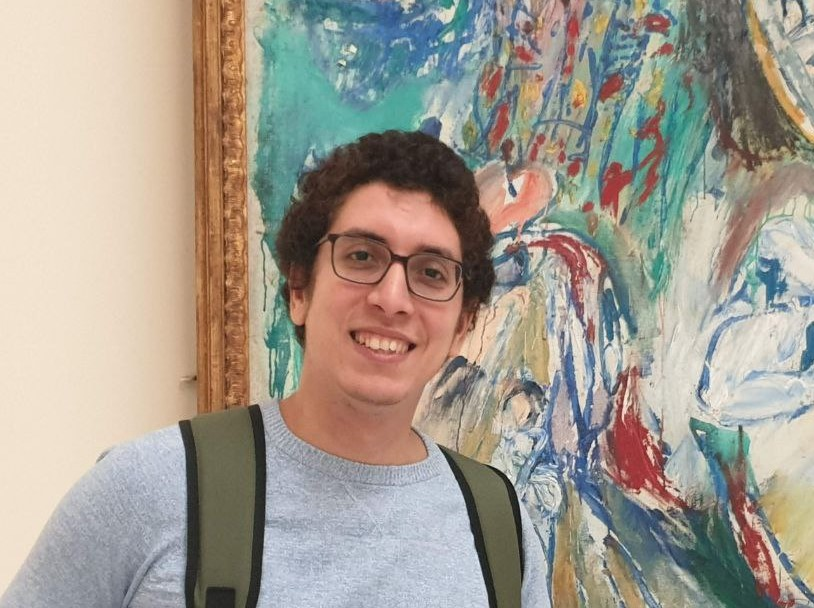

Human-centered AI researcher and ML engineer building safe, adaptive, and personalised systems — from LLM security & agentic AI to multimodal HCI and surgical robotics.

AGI am a Senior Machine Learning Security Engineer at MATVIS GmbH in Tübingen, building the security foundation for safe generative AI deployment — including the AI Firewall and automated red-teaming for GenAI. I am concurrently a PhD Visiting Researcher at the Machine Intelligence Laboratory, Cambridge University, collaborating with Microsoft Cambridge on contextual LLM agents, their evaluation, and robustness, supervised by Prof. Dr. Per Ola Kristensson.
I am also Deputy Head and Doctoral Researcher at the German Research Center for Artificial Intelligence (DFKI), where I lead a team of researchers and have secured over 2 million Euros in research funding. My recent grants include €427,500 for Secure Language Models for Knowledge Management (SisWiss) and €100,000 for hybrid reinforcement and imitation learning (TeachTAM), both funded by the German Federal Ministry of Research (BMFTR, formerly BMBF).
My research covers NLP & LLM Security & Evaluation, Incremental & Continual Learning, Reinforcement & Imitation Learning, Multimodal Interaction & Interface Design, and Gesture Recognition & Computer Vision, applied to automotive, robotics, dialogue systems, and well-being domains, with partners including Carl Zeiss, Microsoft Research, and BMW.
Whether it's research collaboration, industry partnership, student supervision, or a conversation about LLM security, HCI, or adaptive AI — I'd love to hear from you.